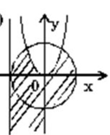

Вариант 2
|
Проверить принадлежность точки, координаты которой вводит пользователь (x, y – действительные числа),
заштрихованной области или ее границе. На рисунках даны окружности с единичным радиусом и парабола y=x2.
|

|